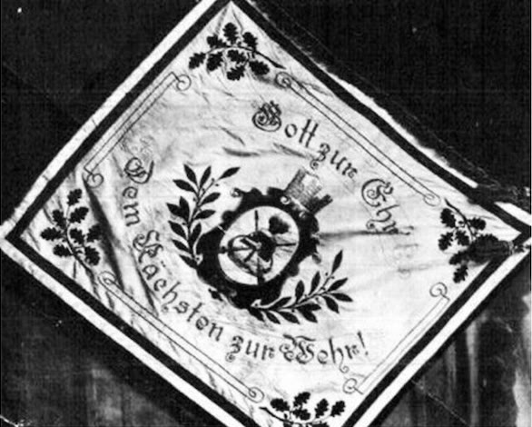
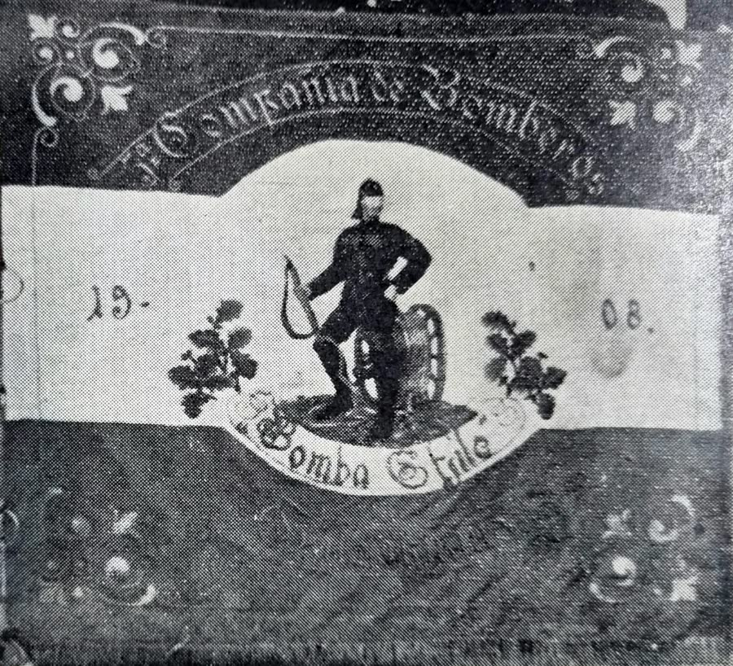
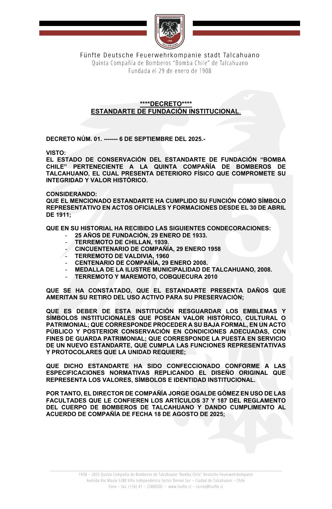
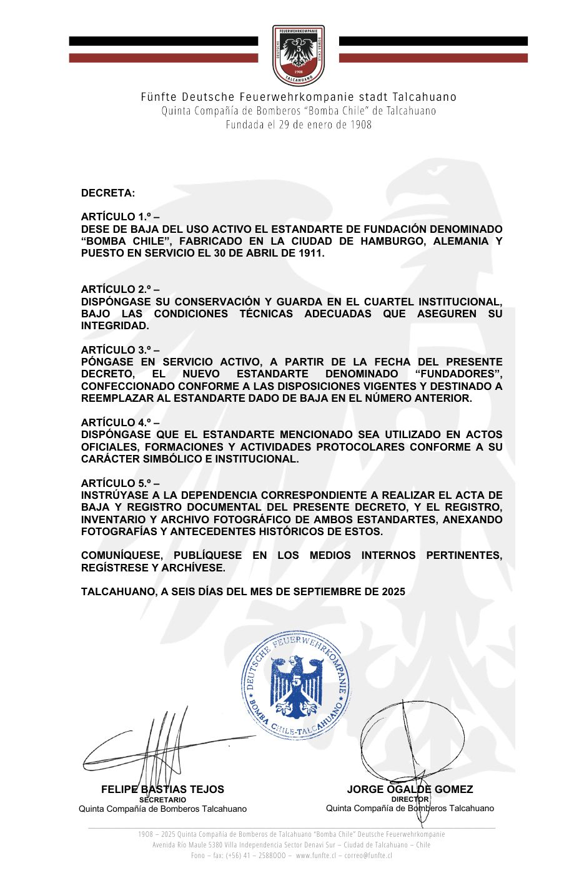

El 6 de septiembre de 2025, después de más de 114 años de servicio, el Estandarte de Fundación pasó a descansar como patrimonio de la Quinta, y en su lugar entró en servicio el estandarte «Fundadores». Estas son las palabras de esa ceremonia.
Un estandarte, como al que hoy damos digno descanso, no es solo una tela bordada ni color ceremonial. Es el reflejo silencioso de generaciones de hombres que, sin pedir nada a cambio, lo siguieron, combatiendo al fuego, al humo, al agua, a los fierros retorcidos y al dolor, guiados únicamente por el lema que orgullosamente ostenta:
«Gott zur Ehr, dem Nächsten zur Wehr»
«Honor a Dios, ayuda al prójimo»
Fabricado en la ciudad de Hamburgo, Alemania, nos acompaña desde el 30 de abril de 1911, día en que, en una ceremonia similar a esta, fue bautizado junto con la primera máquina con que contó la Quinta Compañía, una bomba a vapor denominada «Bomba Chile».


Su simbología
Los colores vienen de la bandera del Imperio alemán (1871–1918): el negro representa la firmeza y la disciplina; el blanco, la paz y la vocación de servicio, y el rojo, la valentía y el sacrificio. Son los mismos del borde, una combinación característica de Prusia y Baviera que se usaba en los símbolos oficiales del siglo XIX y principios del XX.
En el anverso, un escudo dorado reúne un casco alemán con penacho dorado (protección y tradición), hachas cruzadas (acción y rescate), un bastón de mando o trompeta (liderazgo) y una corona mural que representa a Talcahuano. Lo rodean ramas de roble, símbolo de fortaleza, y de laurel, símbolo de honor y victoria.
En el reverso, un bombero con uniforme tradicional alemán sostiene una manguera junto a una bomba manual. Alrededor van bordados «5ª Compañía de Bomberos», «Bomba Chile», «Talcahuano» y el año de fundación, partido en 19 y 08 a cada lado de la figura.
El lema, propio de los bomberos voluntarios de origen alemán desde el siglo XIX, resume el servicio desinteresado a la comunidad como una vocación. Así, el estandarte es un homenaje a los fundadores, a su origen alemán y a la vocación de servicio que ha pasado de generación en generación.
Decreto de cambio de estandarte
Decreto núm. 01, del 6 de septiembre de 2025, que da de baja el Estandarte de Fundación y pone en servicio el estandarte «Fundadores».

